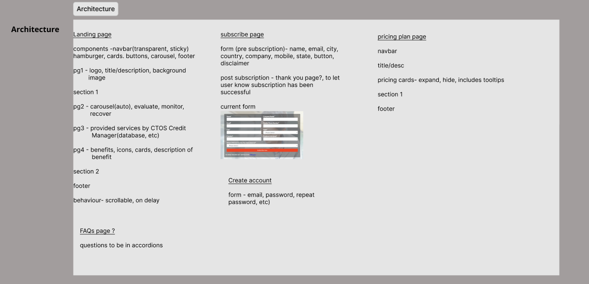
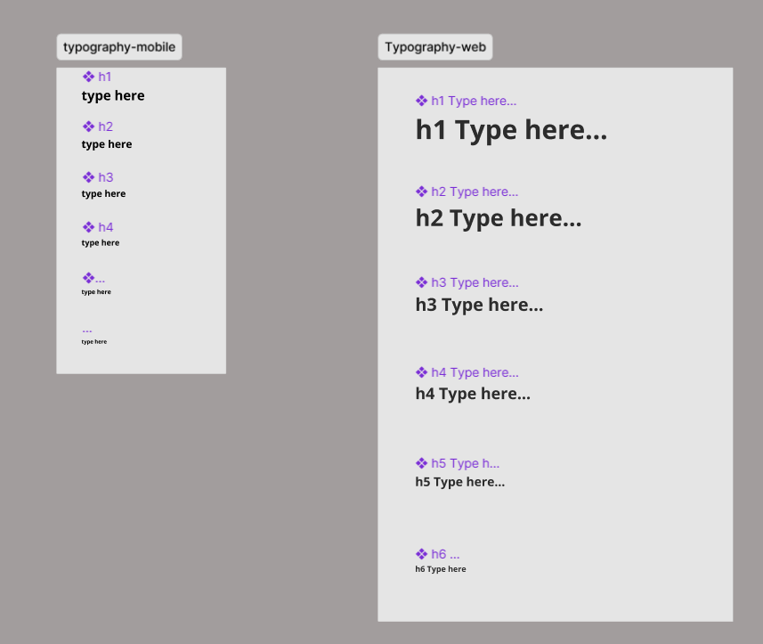
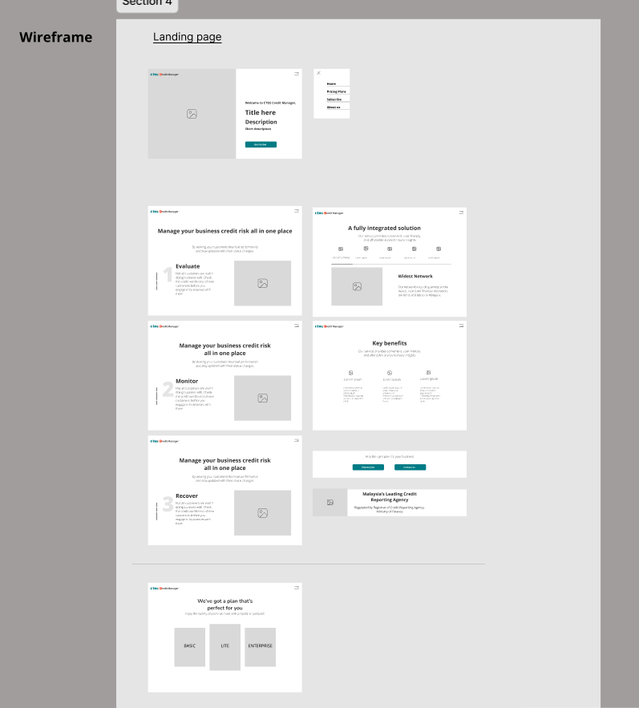
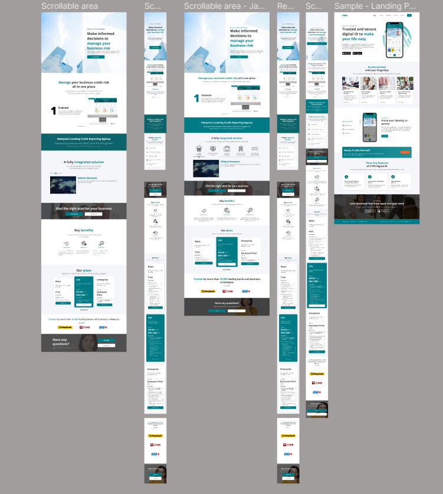

CTOS Data System Landing Page
I was a UI/UX Designing intern at CTOS Data Systems when i was given this task. this task taught me the processes involved when coming up with a new design for a responsive website. These few processes involved are researching current interfaces within the market, listing out the new architecture of the platform before proceeding with the design, wireframing, prototyping for both web view and mobile view and finally proceeding with the development.
While working on this task, many different drafts were made before finalizing the design and many discussions and reviews were done with peers and leaders within the department. this has taught me a few things on how important are your peers opinion in terms of reviewing your work as it could help you learn and grow as a UI/UX Designer.
on a more technical point of view of a designer, this task has helped me learn the importance of taking a few things into consideration such as being realistic and making sure that the design is achievable within the timeframe given. moreover, the importance of making it responsive was also understood while working on this using bootstrap.
Images shown below are all from Figma.
Started of the project by understanding and listing out the architecture of the website.
Decided on the typography before designing to standardize every font size and style. Every font was made into a component so that changes can be made easily on a bigger scale.
A low fidelity wireframe was then started according to research and architecture that has been done and listed out in the earlier stages

Components made for both mobile and web version. This was all made with the consideration of whether or not it can be achieved using Bootstrap 5.
Hi-fi wireframe/Prototype made after getting drafts approved. Desgined using figma which was fully interactable with functioning animations which was achieved using components
Development was done after the design task using HTML, CSS, JavaScript and Bootstrap 5